The domain of Earth observation is home to hundreds of petabytes of observational data from a plethora of diverse sensing instruments. Naturally, conditional mappings between subsets of available sensors are useful for interpreting the data. However, these conditional mappings are generally not injective and should be parameterised as data distributions.
COP-GEN is the first generative model for Earth observation that can approximate these multi-modal distributions owing to its latent diffusion transformer architecture. Consequently, unlike its state-of-the-art counterparts, COP-GEN can generate highly diverse distributions that represent the diversity of the underlying data more faithfully.
Relationships between Earth observation modalities are inherently non-injective: identical conditioning information—such as terrain elevation or land-cover class—can correspond to multiple physically plausible observations. Such mappings are inherently one-to-many, as shown in Figure 1.
Existing multimodal Earth observation models are typically deterministic—given the same input conditions, they always produce the same output. Models optimized to minimize pointwise error against a single ground truth inevitably regress toward conditional means, suppressing variability that is physically relevant and present in real-world observations.
Stochastic generative modeling provides an alternative route. By learning joint probability distributions across sensors, generative models can estimate multiple physically plausible realisations of a scene conditioned on a subset of input modalities. This approach aligns with remote sensing practice, where environmental processes are dynamic, observations are most often incomplete, and many different outputs are valid.
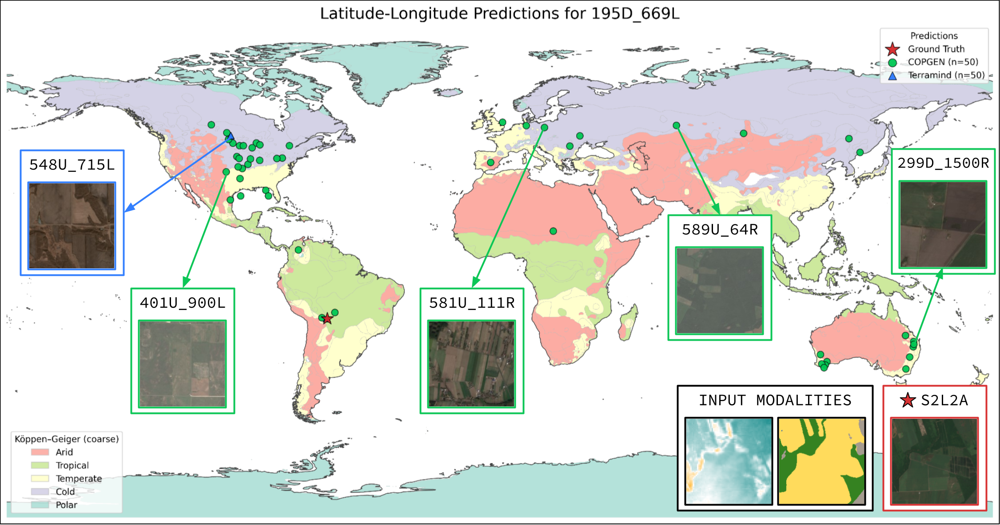
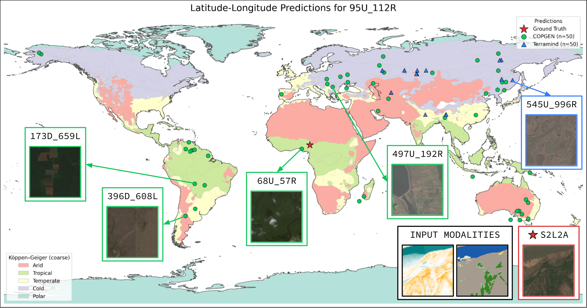
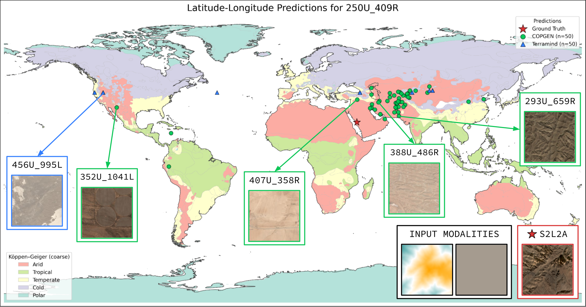
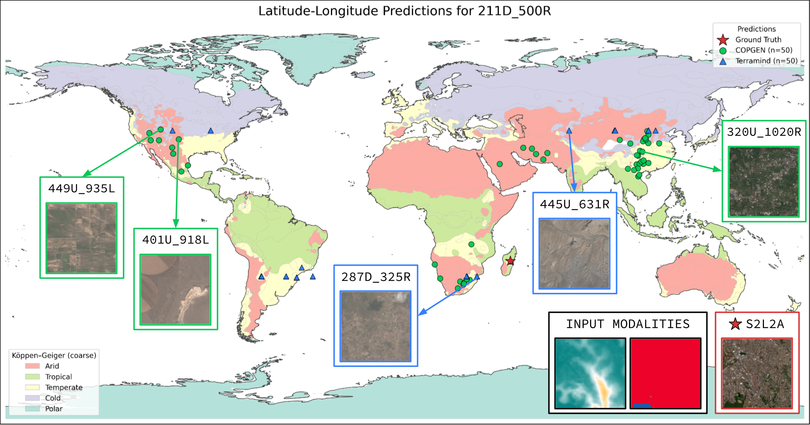
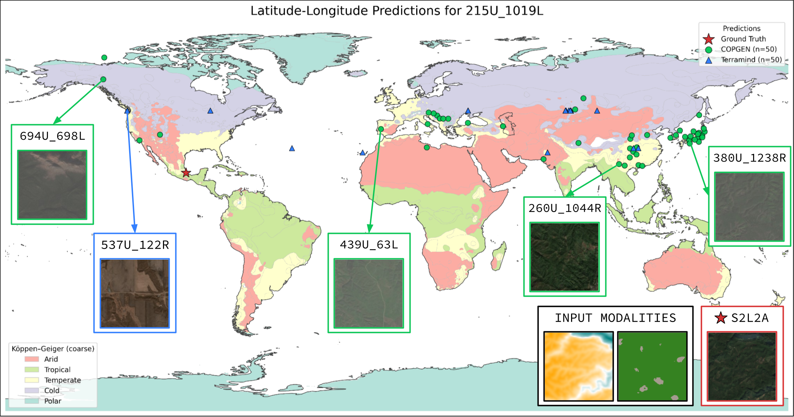
COP-GEN is a unified multimodal generative model that combines modality-specific latent encoders with a shared transformer-based diffusion backbone. It operates on six modalities at their native resolutions:
As more conditioning modalities are provided, COP-GEN appropriately narrows its output distribution. Starting from DEM-only conditioning, we incrementally add LULC, S1 RTC, timestamps, and geolocation. The generated spectral distributions systematically converge toward the ground truth.
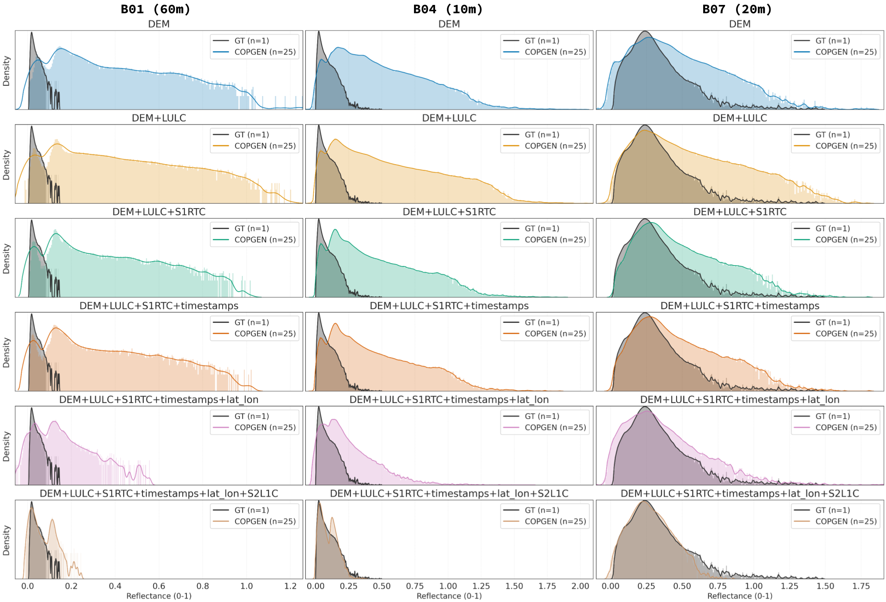
COP-GEN learns physically meaningful spectral relationships. Per-pixel spectral responses closely match the characteristic signatures of different land-cover types across all Sentinel-2 bands.
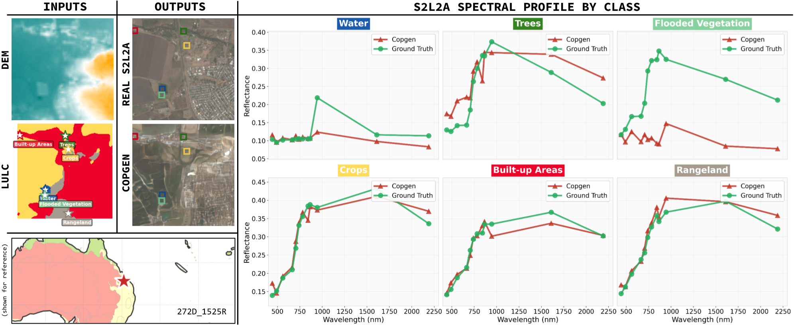
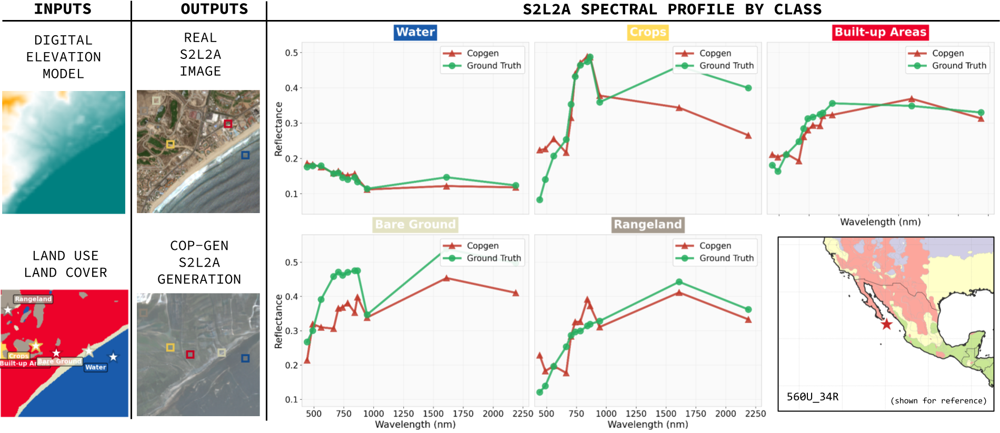
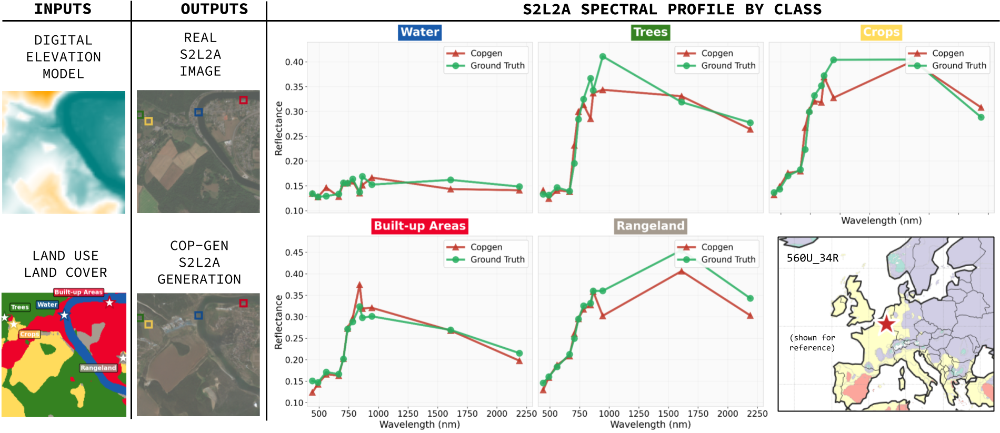
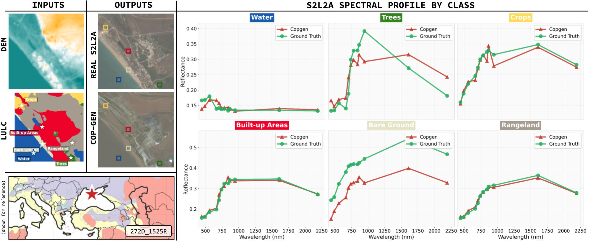
COP-GEN can also perform band infilling — generating missing spectral bands given a subset of available bands. This is useful for completing incomplete observations or synthesizing bands that were not captured by the sensor.
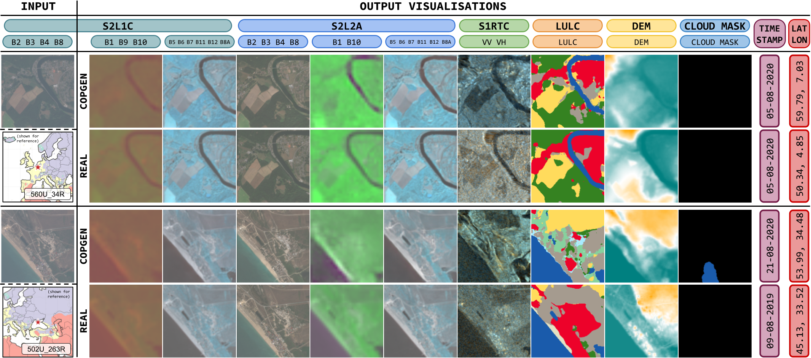
Additional examples of DEM + LULC → Sentinel-2 L2A generation, demonstrating COP-GEN's ability to produce diverse, high-quality outputs across different geographic regions and land-cover types.
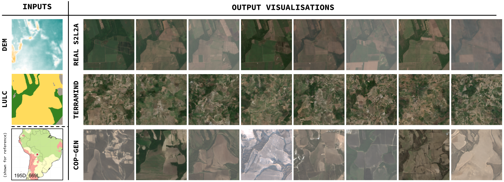
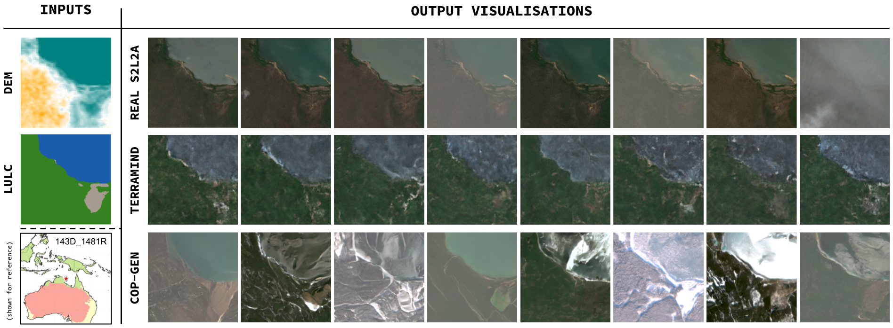
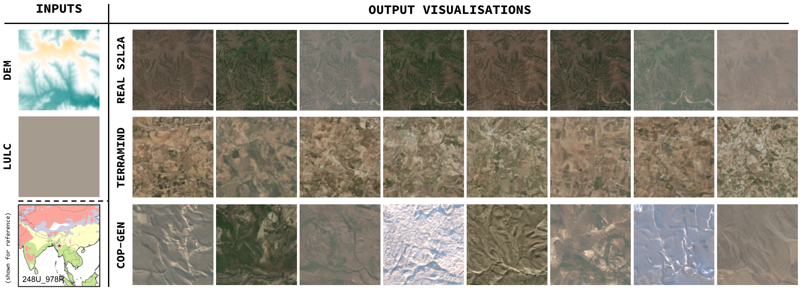
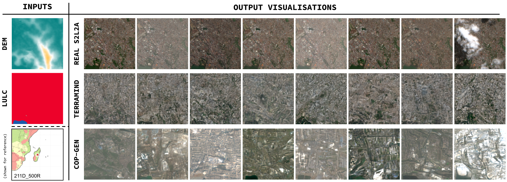
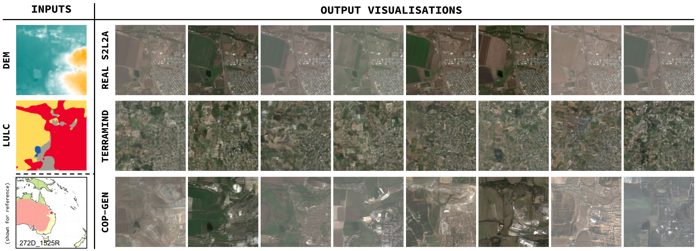
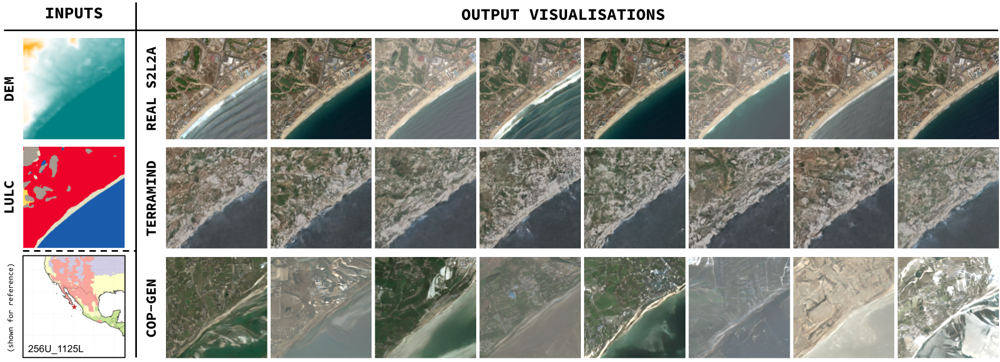
We adopt a Peak-Capability (oracle) evaluation protocol: for each test tile, we generate multiple independent samples and report the best-matching generation. This isolates the model's representational capacity from stochastic variance and answers: does the model's learned distribution contain high-fidelity realisations consistent with the ground truth?
| Target | Metric | Peak perf. (Best per Tile) | |
|---|---|---|---|
| COP-GEN | TerraMind | ||
| DEM | MAE | 26.80 | 145.62 |
| SSIM | 0.45 | 0.44 | |
| LULC | Top-1 | 0.84 | 0.80 |
| mIoU | 0.42 | 0.55 | |
| S1RTC | MAE | 2.63 | 2.64 |
| PSNR | 16.83 | 19.65 | |
| S2L1C | MAE | 0.02 | 0.11 |
| PSNR | 21.16 | 12.77 | |
| S2L1C† | MAE | 0.05 | 0.12 |
| PSNR | 13.92 | 12.68 | |
| S2L2A | MAE | 0.02 | 0.10 |
| PSNR | 22.47 | 17.46 | |
| S2L2A‡ | MAE | 0.06 | 0.10 |
| PSNR | 14.40 | 16.18 | |
| LatLon | Mean km | 98.35 | 94.25 |
Table 1: Tile-Level Peak Capability Analysis. We report the oracle performance (best generation selected per tile) to demonstrate the upper bound of generation quality. Bold indicates the best result. † S2L2A not present among inputs. ‡ S2L1C not present among inputs.
We analyze the impact of removing individual conditioning modalities to reveal the physical couplings learned by the model.
| Target | Removed | Metric | COP-GEN | TerraMind |
|---|---|---|---|---|
| DEM | w/o LatLon | MAE | 47.44 | 140.01 |
| w/o LULC | MAE | 46.96 | 140.80 | |
| w/o S1RTC | MAE | 54.85 | 140.86 | |
| w/o S2L1C | MAE | 51.85 | 146.00 | |
| w/o S2L2A | MAE | 45.78 | 146.71 | |
| LULC | w/o LatLon | Top-1 Acc | 0.81 | 0.80 |
| w/o DEM | Top-1 Acc | 0.80 | 0.80 | |
| w/o S1RTC | Top-1 Acc | 0.79 | 0.80 | |
| w/o S2L1C | Top-1 Acc | 0.80 | 0.80 | |
| w/o S2L2A | Top-1 Acc | 0.80 | 0.80 | |
| S1RTC | w/o LatLon | MAE | 2.70 | 2.63 |
| w/o DEM | MAE | 2.75 | 2.63 | |
| w/o LULC | MAE | 2.76 | 2.63 | |
| w/o S2L1C | MAE | 2.70 | 2.64 | |
| w/o S2L2A | MAE | 2.68 | 2.62 | |
| S2L1C | w/o LatLon | MAE | 0.02 | 0.11 |
| w/o DEM | MAE | 0.02 | 0.11 | |
| w/o LULC | MAE | 0.02 | 0.11 | |
| w/o S1RTC | MAE | 0.02 | 0.11 | |
| w/o S2L2A | MAE | 0.06 | 0.12 | |
| S2L2A | w/o LatLon | MAE | 0.02 | 0.10 |
| w/o DEM | MAE | 0.02 | 0.10 | |
| w/o LULC | MAE | 0.02 | 0.10 | |
| w/o S1RTC | MAE | 0.02 | 0.10 | |
| w/o S2L1C | MAE | 0.07 | 0.10 | |
| LatLon | w/o DEM | Mean km | 210.54 | 90.67 |
| w/o LULC | Mean km | 188.70 | 95.50 | |
| w/o S1RTC | Mean km | 173.09 | 78.23 | |
| w/o S2L1C | Mean km | 193.43 | 138.83 | |
| w/o S2L2A | Mean km | 182.45 | 77.41 |
Table 2: Tile-Level Leave-One-Out Analysis. COP-GEN shows clear dominance in DEM reconstruction (MAE) and optical bands (S2L1C/S2L2A), while TerraMind demonstrates stronger localization capabilities (LatLon).
We present COP-GEN, the first multimodal generative model for Earth observation that successfully combines multiple Copernicus modalities into a single stochastic framework. By learning joint probability distributions across sensors, COP-GEN can estimate multiple physically plausible realisations of a scene conditioned on any subset of input modalities.
This work is as much about the architecture as it is about how generative Earth observation models should be evaluated — moving beyond single-reference metrics to embrace the inherent uncertainty of cross-modal mappings.
@article{espinosa2026copgen,
title={COP-GEN: Latent Diffusion Transformer for Copernicus Earth Observation Data},
author={Espinosa, Miguel and Gmelich Meijling, Eva and Marsocci, Valerio and Crowley, Elliot J. and Czerkawski, Mikolaj},
journal={arXiv preprint},
year={2026}
}